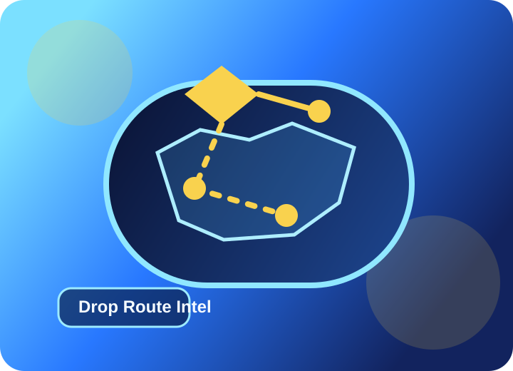

Fortnite OG Companion
Find the best drop spot for every OG season.
Compare safer openers, high-upside hot drops, and rotation-friendly backup plans without leaving your browser.

Best Spots
Sorted for low conflict, clean mobility, and strong placement routes.